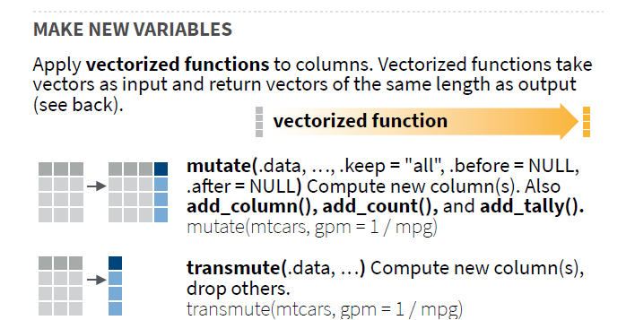
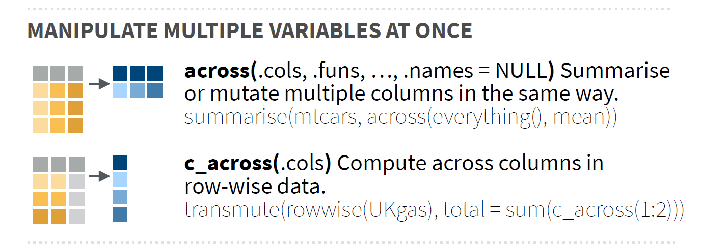

# meu computador (mudar de acordo)
setwd("E:/Desktop/UFSC/aulas/classes/RGV410046/data")6. Mutação
Diretório
Pacotes e dados
library(rio)
library(tidyverse)
library(metan)
# dados
maize <-
import("examples_data.xlsx",
sheet = "maize",
setclass = "tbl")Geral

A função mutate() é utilizada quando se deseja adicionar novas variáveis no conjunto de dados. Estas variáveis são funções de variáveis existentes. Como exemplo, vamos criar uma nova variável chamada CD no conjunto de dados maize, qual será a razão entre CESP e DIES. Note que a função adiciona a nova variável após a última variável origina e mantém todas as demais. Você pode controlar a posição da nova variável criada utilizando os argumentos .before e .after (assim como na função relocate()) e quais variáveis são mantidas utilizando o argumento .keep.
# padrão: nova variável inserida na última posição
maize %>% mutate(CD = CESP/DIES)# A tibble: 780 × 11
AMB HIB REP APLA_PLANT AIES_PLANT CESP DIES MGRA MMG NGRA CD
<chr> <chr> <chr> <dbl> <dbl> <dbl> <dbl> <dbl> <dbl> <dbl> <dbl>
1 A1 H1 I 2.45 2.39 16.9 52.1 228. 375. NA 0.324
2 A1 H1 I 2.5 1.43 14.4 50.7 187. 437. 427 0.284
3 A1 H1 I 2.69 1.52 16.5 54.7 230. 464. 497 0.302
4 A1 H1 I 2.8 1.64 16.8 52.0 213. 408. 523 0.323
5 A1 H1 I 2.62 1.55 15.9 51.6 224. 406. 551 0.308
6 A1 H1 II 2.12 1.8 15 51.4 203. 383. 529 0.292
7 A1 H1 II 3.15 1.78 10.9 NA 75.2 256. 294 NA
8 A1 H1 II 2.97 1.84 15 53.4 204. 387. 528 0.281
9 A1 H1 II 3.1 1.78 13.6 50.8 187. 348. 538 0.267
10 A1 H1 II 3.02 1.6 16.3 53.9 250. 430. 582 0.302
# … with 770 more rows# posição da nova variável
maize %>% mutate(CD = CESP/DIES,
.after = DIES)# A tibble: 780 × 11
AMB HIB REP APLA_PLANT AIES_PLANT CESP DIES CD MGRA MMG NGRA
<chr> <chr> <chr> <dbl> <dbl> <dbl> <dbl> <dbl> <dbl> <dbl> <dbl>
1 A1 H1 I 2.45 2.39 16.9 52.1 0.324 228. 375. NA
2 A1 H1 I 2.5 1.43 14.4 50.7 0.284 187. 437. 427
3 A1 H1 I 2.69 1.52 16.5 54.7 0.302 230. 464. 497
4 A1 H1 I 2.8 1.64 16.8 52.0 0.323 213. 408. 523
5 A1 H1 I 2.62 1.55 15.9 51.6 0.308 224. 406. 551
6 A1 H1 II 2.12 1.8 15 51.4 0.292 203. 383. 529
7 A1 H1 II 3.15 1.78 10.9 NA NA 75.2 256. 294
8 A1 H1 II 2.97 1.84 15 53.4 0.281 204. 387. 528
9 A1 H1 II 3.1 1.78 13.6 50.8 0.267 187. 348. 538
10 A1 H1 II 3.02 1.6 16.3 53.9 0.302 250. 430. 582
# … with 770 more rows# mantém somente as utilizadas no cálculo
maize %>% mutate(CD = CESP/DIES,
.keep = "used")# A tibble: 780 × 3
CESP DIES CD
<dbl> <dbl> <dbl>
1 16.9 52.1 0.324
2 14.4 50.7 0.284
3 16.5 54.7 0.302
4 16.8 52.0 0.323
5 15.9 51.6 0.308
6 15 51.4 0.292
7 10.9 NA NA
8 15 53.4 0.281
9 13.6 50.8 0.267
10 16.3 53.9 0.302
# … with 770 more rows# mantém as não utilizadas
maize %>% mutate(CD = CESP/DIES,
.keep = "unused")# A tibble: 780 × 9
AMB HIB REP APLA_PLANT AIES_PLANT MGRA MMG NGRA CD
<chr> <chr> <chr> <dbl> <dbl> <dbl> <dbl> <dbl> <dbl>
1 A1 H1 I 2.45 2.39 228. 375. NA 0.324
2 A1 H1 I 2.5 1.43 187. 437. 427 0.284
3 A1 H1 I 2.69 1.52 230. 464. 497 0.302
4 A1 H1 I 2.8 1.64 213. 408. 523 0.323
5 A1 H1 I 2.62 1.55 224. 406. 551 0.308
6 A1 H1 II 2.12 1.8 203. 383. 529 0.292
7 A1 H1 II 3.15 1.78 75.2 256. 294 NA
8 A1 H1 II 2.97 1.84 204. 387. 528 0.281
9 A1 H1 II 3.1 1.78 187. 348. 538 0.267
10 A1 H1 II 3.02 1.6 250. 430. 582 0.302
# … with 770 more rows# mantém somente a variável criada
maize %>% mutate(CD = CESP/DIES,
.keep = "none")# A tibble: 780 × 1
CD
<dbl>
1 0.324
2 0.284
3 0.302
4 0.323
5 0.308
6 0.292
7 NA
8 0.281
9 0.267
10 0.302
# … with 770 more rowsMutação por grupos
A função group_by() pode ser utilizada para realizar mutação dentro de cada nível de uma ou mais variáveis categóricas. Para este exemplo, vamos criar uma variável (rank) que será o rankeamento das observações dentro de cada híbrido com base na MGRA (em ordem decrescente).
maize |>
group_by(HIB) |>
mutate(rank = rank(desc(MGRA)))# A tibble: 780 × 11
# Groups: HIB [13]
AMB HIB REP APLA_PLANT AIES_PLANT CESP DIES MGRA MMG NGRA rank
<chr> <chr> <chr> <dbl> <dbl> <dbl> <dbl> <dbl> <dbl> <dbl> <dbl>
1 A1 H1 I 2.45 2.39 16.9 52.1 228. 375. NA 8
2 A1 H1 I 2.5 1.43 14.4 50.7 187. 437. 427 33
3 A1 H1 I 2.69 1.52 16.5 54.7 230. 464. 497 7
4 A1 H1 I 2.8 1.64 16.8 52.0 213. 408. 523 15
5 A1 H1 I 2.62 1.55 15.9 51.6 224. 406. 551 9
6 A1 H1 II 2.12 1.8 15 51.4 203. 383. 529 22
7 A1 H1 II 3.15 1.78 10.9 NA 75.2 256. 294 60
8 A1 H1 II 2.97 1.84 15 53.4 204. 387. 528 21
9 A1 H1 II 3.1 1.78 13.6 50.8 187. 348. 538 31
10 A1 H1 II 3.02 1.6 16.3 53.9 250. 430. 582 5
# … with 770 more rows
Tip
Você pode dizer o que o seguinte código retornará?
maize |>
group_by(HIB) |>
slice_max(MGRA, n = 2)Em alguns casos, um agrupamento específico onde cada linha é considerada um grupo pode ser útil. Isto pode ser realizado com a função rowwise(). Como group_by(), rowwise() não faz nada sozinha; apenas muda a forma como os outros verbos (ex., mutate, summarise) funcionam. Por exemplo, compare os resultados de mutate() no código a seguir:
df <- tibble(x = 1:2, y = 3:4, z = 5:6)
# sem rowise()
df |> mutate(m = sum(c(x, y, z)))# A tibble: 2 × 4
x y z m
<int> <int> <int> <int>
1 1 3 5 21
2 2 4 6 21# com rowise()
df |>
rowwise() |>
mutate(soma = sum(c(x, y, z)))# A tibble: 2 × 4
# Rowwise:
x y z soma
<int> <int> <int> <int>
1 1 3 5 9
2 2 4 6 12# mesmo resultado
# utilizando semântica tidyselect
df |>
rowwise() |>
mutate(soma = sum(c_across(1:3)))# A tibble: 2 × 4
# Rowwise:
x y z soma
<int> <int> <int> <int>
1 1 3 5 9
2 2 4 6 12Mutação de várias variáveis

Em alguns casos, deseja-se aplicar a mesma função de mutação (ou resumo) à várias variáveis. A função across() facilita a aplicação da mesma transformação a várias colunas, permitindo que você use a semântica select() dentro de funções como summarise() e mutate(). Como exemplo de aplicação, vamos criar uma função para rescalar uma variável para uma amplitude 0-1 e aplicar essa função à todas as colunas numéricas do conjunto maize.
# função para rescalar
rescale <- function(x) {
rng <- range(x, na.rm = TRUE)
(x - rng[1]) / (rng[2] - rng[1])
}
# aplica a função rescale() a todas as colunas numéricas
maize %>% mutate(across(where(is.numeric), rescale))# A tibble: 780 × 10
AMB HIB REP APLA_PLANT AIES_PLANT CESP DIES MGRA MMG NGRA
<chr> <chr> <chr> <dbl> <dbl> <dbl> <dbl> <dbl> <dbl> <dbl>
1 A1 H1 I 0.742 1 0.821 0.674 0.730 0.596 NA
2 A1 H1 I 0.758 0.492 0.694 0.611 0.551 0.742 0.370
3 A1 H1 I 0.815 0.540 0.801 0.786 0.739 0.805 0.463
4 A1 H1 I 0.848 0.603 0.816 0.670 0.666 0.674 0.497
5 A1 H1 I 0.794 0.556 0.770 0.652 0.710 0.669 0.534
6 A1 H1 II 0.642 0.688 0.724 0.645 0.620 0.615 0.505
7 A1 H1 II 0.955 0.677 0.515 NA 0.0717 0.314 0.194
8 A1 H1 II 0.9 0.709 0.724 0.728 0.627 0.624 0.504
9 A1 H1 II 0.939 0.677 0.653 0.620 0.553 0.532 0.517
10 A1 H1 II 0.915 0.582 0.791 0.752 0.825 0.726 0.575
# … with 770 more rows# aplica a função rescale() para algumas colunas
maize %>% mutate(across(MGRA:NGRA, rescale))# A tibble: 780 × 10
AMB HIB REP APLA_PLANT AIES_PLANT CESP DIES MGRA MMG NGRA
<chr> <chr> <chr> <dbl> <dbl> <dbl> <dbl> <dbl> <dbl> <dbl>
1 A1 H1 I 2.45 2.39 16.9 52.1 0.730 0.596 NA
2 A1 H1 I 2.5 1.43 14.4 50.7 0.551 0.742 0.370
3 A1 H1 I 2.69 1.52 16.5 54.7 0.739 0.805 0.463
4 A1 H1 I 2.8 1.64 16.8 52.0 0.666 0.674 0.497
5 A1 H1 I 2.62 1.55 15.9 51.6 0.710 0.669 0.534
6 A1 H1 II 2.12 1.8 15 51.4 0.620 0.615 0.505
7 A1 H1 II 3.15 1.78 10.9 NA 0.0717 0.314 0.194
8 A1 H1 II 2.97 1.84 15 53.4 0.627 0.624 0.504
9 A1 H1 II 3.1 1.78 13.6 50.8 0.553 0.532 0.517
10 A1 H1 II 3.02 1.6 16.3 53.9 0.825 0.726 0.575
# … with 770 more rowsTambém é possível utilizar a semântica select() dentro de across(). Isso significa que select helpers podem ser utilizados. No exemplo abaixo apenas as variáveis que contém "_PLANT" são mutadas, sendo que os valores destas variáveis são divididos por 2.
# usando select helpers
# divide o valor da variável pela metade
# atribui um sufixo para as novas variáveis
# seleciona apenas as utilizadas
maize %>%
mutate(across(contains("_PLANT"), ~.x / 2,
.names = "{.col}_metade"),
.after = AIES_PLANT,
.keep = "used")# A tibble: 780 × 4
APLA_PLANT AIES_PLANT APLA_PLANT_metade AIES_PLANT_metade
<dbl> <dbl> <dbl> <dbl>
1 2.45 2.39 1.23 1.20
2 2.5 1.43 1.25 0.715
3 2.69 1.52 1.34 0.76
4 2.8 1.64 1.4 0.82
5 2.62 1.55 1.31 0.775
6 2.12 1.8 1.06 0.9
7 3.15 1.78 1.58 0.89
8 2.97 1.84 1.48 0.92
9 3.1 1.78 1.55 0.89
10 3.02 1.6 1.51 0.8
# … with 770 more rows
Tip
Note que no exemplo anterior não foi utilizado uma função externa para dividir os valores das variáveis que contém o sufixo “_PLANT”, mas sim uma expressão (~.x / 2). Esta notação é conhecida como lambda estilo purr, começando com um til ~ e usando .x para se referir a cada coluna individual que foi selecionada no argumento .cols.
Note como o mesmo resultado anterior pode ser obtido utilizando a função divide2()
divide2 <- function(x){
x / 2
}
maize %>%
mutate(across(contains("_PLANT"), divide2,
.names = "{.col}_metade"),
.after = AIES_PLANT,
.keep = "used")# A tibble: 780 × 4
APLA_PLANT AIES_PLANT APLA_PLANT_metade AIES_PLANT_metade
<dbl> <dbl> <dbl> <dbl>
1 2.45 2.39 1.23 1.20
2 2.5 1.43 1.25 0.715
3 2.69 1.52 1.34 0.76
4 2.8 1.64 1.4 0.82
5 2.62 1.55 1.31 0.775
6 2.12 1.8 1.06 0.9
7 3.15 1.78 1.58 0.89
8 2.97 1.84 1.48 0.92
9 3.1 1.78 1.55 0.89
10 3.02 1.6 1.51 0.8
# … with 770 more rowsMutação condicional
É muito comum comum que condicionantes sejam necessárias quando alguma nova variável for criada. Abaixo, um pequeno exemplo contendo notas de 10 alunos é utilizado.
set.seed(5)
notas <-
data.frame(aluno = paste0("Aluno", 1:10),
nota = runif(10, 3, 10) |> round(1))
notas aluno nota
1 Aluno1 4.4
2 Aluno2 7.8
3 Aluno3 9.4
4 Aluno4 5.0
5 Aluno5 3.7
6 Aluno6 7.9
7 Aluno7 6.7
8 Aluno8 8.7
9 Aluno9 9.7
10 Aluno10 3.8Os objetivos aqui são:
- Criar uma nova variável em
notascontendo a classe que tal aluno foi classificado dependendo de sua nota, com as seguintes condições:- Nota menor que 4: reprovado
- Nota de 4 a menos que 7: exame
- Nota igual ou maior que 7: aprovado
- Ordenar as notas em ordem decrescente (do maior para o menor).
ifelse() com R base
A função ifelse() retorna um valor com a mesma forma de test que é preenchido com elementos selecionados de yes ou no, dependendo se o elemento de test é TRUE ou FALSE. Para criação da nova coluna baseado nas notas em notas, utiliza-se a seguinte abordagem. Note que como temos três classes (aprovado, reprovado ou exame) e ifelse() somente retorna duas dependendo se o teste é TRUE ou FALSE, precisamos aninhar ifelse()s.
classe <-
transform(notas,
condicao = ifelse(nota < 4,
yes = "reprovado",
no = ifelse(nota >= 4 & nota < 7,
yes = "exame",
no = "aprovado")))
classe[order(classe$nota, decreasing = TRUE), ] aluno nota condicao
9 Aluno9 9.7 aprovado
3 Aluno3 9.4 aprovado
8 Aluno8 8.7 aprovado
6 Aluno6 7.9 aprovado
2 Aluno2 7.8 aprovado
7 Aluno7 6.7 exame
4 Aluno4 5.0 exame
1 Aluno1 4.4 exame
10 Aluno10 3.8 reprovado
5 Aluno5 3.7 reprovadocase_when() com dplyr
case_when() pode ser vista como uma versão vetorizada de ifelse() que permite que você avalie várias instruções. Se nenhum caso corresponder, NA será retornado. Esta função é particularmente útil dentro da função mutate() quando você quer criar uma nova variável que depende de uma combinação complexa de variáveis existentes.
A função é baseada em uma sequência de fórmulas de dois lados. O lado esquerdo (LHS) determina o teste; O lado direito (RHS) fornece o valor de substituição.
notas |>
mutate(condicao = case_when(
nota < 4 ~ "reprovado",
between(nota, 4, 6.99999999) ~ "exame", # mesmo que nota >= 4 & nota < 7
TRUE ~ "aprovado" # TRUE: o que não foi incluso nas duas avaliações anteriores
)) |>
arrange(desc(nota)) aluno nota condicao
1 Aluno9 9.7 aprovado
2 Aluno3 9.4 aprovado
3 Aluno8 8.7 aprovado
4 Aluno6 7.9 aprovado
5 Aluno2 7.8 aprovado
6 Aluno7 6.7 exame
7 Aluno4 5.0 exame
8 Aluno1 4.4 exame
9 Aluno10 3.8 reprovado
10 Aluno5 3.7 reprovadoNeste exemplo, o conjunto de dados maize é utilizado para mostrar como uma variável qualitativa nominal pode ser criada utilizando a função case_when(). A nova variável será criada dependendo dos valores de APLA, AIES ou CESP. Ao agrupar pela nova variável categórica criada e utilizar a função slice_sample(), um exemplo de cada nível é amostrado aleatoriamente.
set.seed(10)
maize %>%
mutate(
CASO = case_when(
MGRA > 280 | APLA_PLANT < 1.3 | NGRA > 820 ~ "Selecionar",
APLA_PLANT > 2.3 ~ "Alto",
MGRA < 130 ~ "Pouco produtivo",
TRUE ~ "Outro"
)
) |>
group_by(CASO) |>
slice_sample(n = 1)# A tibble: 4 × 11
# Groups: CASO [4]
AMB HIB REP APLA_PLANT AIES_PLANT CESP DIES MGRA MMG NGRA CASO
<chr> <chr> <chr> <dbl> <dbl> <dbl> <dbl> <dbl> <dbl> <dbl> <chr>
1 A1 H10 III 3.11 1.86 15.5 50.2 194. 405. 479 Alto
2 A3 H2 II 2.04 0.92 14.7 47.2 130. 362. 360 Outro
3 A3 H9 I 2.24 1.17 13 42.6 92.6 384. 241 Pouco p…
4 A3 H2 III 0 1.25 17.8 51.6 196. 348. 562 Selecio…t <-
maize |>
mutate(test = case_when(MGRA > 280 ~ MGRA *10000))
Abordagem R base
O seguinte exemplo realiza o mesmo procedimento de criação da variável categórica utilizando as funções R base transform() e ifelse().
milho2 <-
transform(maize,
CASO = ifelse(MGRA > 280 | APLA_PLANT < 1.3 | NGRA > 820, "Selecionar",
ifelse(APLA_PLANT > 2.3, "Alto",
ifelse(MGRA < 130, "Pouco produtivo",
"Outro"))))
# cria uma lista onde cada elemento é um nível de CASO
casos <- split(milho2, milho2$CASO)
# percorre a lista e amostra uma linha aleatória de cada uma
# junta com rbind()
set.seed(10)
do.call(rbind,
lapply(casos, function(x){
x[sample(nrow(x), 1), ]
})
) AMB HIB REP APLA_PLANT AIES_PLANT CESP DIES MGRA MMG
Alto A1 H10 III 3.01 1.64 17.0 54.27 210.78954 419.0647
Outro A3 H3 I 2.28 1.19 14.3 51.62 162.09701 305.2674
Pouco produtivo A3 H9 II 1.80 0.58 12.4 42.47 73.97816 271.9785
Selecionar A3 H2 III 0.00 1.25 17.8 51.57 195.59343 348.0310
NGRA CASO
Alto 503 Alto
Outro 531 Outro
Pouco produtivo 272 Pouco produtivo
Selecionar 562 SelecionarDesafio
Cálculo de Graus-dia (GD)
Segundo Ometto (1981)1, existe uma temperatura mínima (Tm, ºC) para acionar os dispositivos metabólicos da planta, que é denominada de temperatura basal inferior (Tb, ºC). Somente acima desta temperatura a planta pode se desenvolver. O mesmo autor ressalta, contudo, que a planta também possui uma temperatura basal superior (TB, ºC), acima da qual há um estancamento das atividades metabólicas, prejudicando seu desenvolvimento.
O método de Arnold (1959)2 considera somente a Tb no cálculo dos graus-dia (GD). Neste método, o GD é calculado como a diferença entre entre a temperatura média diária e a temperatura basal inferior, ou seja
\[ GD = \frac{TM + Tm}{2} - Tb \] O método proposto por Ometto (1981), considera a Tb e a TB no cálculo dos graus dia. Neste método, a soma térmica apresenta cinco condicionantes, cada uma com determinada equação (Equações 2 a 6) para cálculo de GD:
\[ \begin{aligned}&\mathrm{TB}>\mathrm{TM}>\mathrm{Tm}>\mathrm{Tb} \quad \mathrm{GD}=\frac{\mathrm{TM}-\mathrm{Tm}}{2}+\mathrm{Tm}-\mathrm{Tb}, \\&\mathrm{TB}>\mathrm{TM}>\mathrm{Tb}>\mathrm{Tm} \quad \mathrm{GD}=\frac{(\mathrm{TM}-\mathrm{Tb})^2}{2(\mathrm{TM}-\mathrm{Tm})}, \\&\mathrm{TB}>\mathrm{Tb}>\mathrm{TM}>\mathrm{Tm} \quad \mathrm{GD}=0, \\&\mathrm{TM}>\mathrm{TB}>\mathrm{Tm}>\mathrm{Tb} \\&\mathrm{GD}=\frac{2(\mathrm{TM}-\mathrm{Tm})(\mathrm{Tm}-\mathrm{Tb})+(\mathrm{TM}-\mathrm{Tm})^2-(\mathrm{TM}-\mathrm{TB})}{2(\mathrm{TM}-\mathrm{Tm})}, \\&\mathrm{TM}>\mathrm{TB}>\mathrm{Tb}>\mathrm{Tm} \quad \mathrm{GD}=\frac{1}{2} . \frac{(\mathrm{TM}-\mathrm{Tb})^2-(\mathrm{TM}-\mathrm{TB})^2}{\mathrm{TM}-\mathrm{Tm}},\end{aligned} \]
Como exemplo motivacional,Os dados contidos em estacao_fazenda.csv contém informações de variáveis climáticas obtidas em sensores automáticos de uma estação meteorológica localizada na Fazenda Experimental da Ressacada (UFSC). Os dados são em escala horária, obtidos do dia 01/01/2022 a 28/11/2022, totalizando 7957 observações.
library(lubridate) # trabalhar com datas
df_estacao <-
import("estacao_fazenda.csv", setclass = "tbl") |>
mutate(dia = dmy(dia))
df_estacao# A tibble: 7,957 × 13
dia m hora prec tmax tmed tmin urmax urmed urmin dirvent
<date> <int> <chr> <dbl> <dbl> <dbl> <dbl> <dbl> <dbl> <dbl> <dbl>
1 2022-01-01 1 00:00 0 21.2 20.6 20.2 100 99.5 99.0 0
2 2022-01-01 1 01:00 0 20.5 19.8 19.4 100 99.9 99.6 0
3 2022-01-01 1 02:00 0 19.7 19.4 19.0 100 100. 99.9 0
4 2022-01-01 1 03:00 0 20.0 19.2 18.7 100 100 100 0
5 2022-01-01 1 04:00 0 20.5 20.2 19.8 100 100 100 0
6 2022-01-01 1 05:00 0 20.7 20.2 19.9 100 100 100 79.8
7 2022-01-01 1 06:00 0 20.2 19.7 19.1 100 100 100 0
8 2022-01-01 1 07:00 0 20.0 19.5 19.1 100 100 100 0
9 2022-01-01 1 08:00 0 22.1 21.2 19 100 99.3 0 0
10 2022-01-01 1 09:00 0 26.0 24.3 22.1 100 89.0 78.6 287.
# … with 7,947 more rows, and 2 more variables: velvent <dbl>, rajada <dbl>Nestes dados, tmax é a temperatura máxima (TM) e tmin é a temperatura mínima (Tm).
Considerando os dados apresentados
- Crie um conjunto de dados chamado
df_tempscontendo, para cada dia, a temperatura máxima como sendo a máxima das máximas e a temperatura mínima como sendo a mínima das mínimas. Nomeie as colunas da seguinte forma:dia: o dia;tmin: temperatura mínima;tmax: temperatura máxima.
- Crie uma função chamada
gd_arnold()para calcular o grau-dia pelo método de Arnold (1959); - Crie uma função chamada
gd_ometto()para calcular o grau-dia pelo método de Ometto (1981); - Considerando uma cultura com TB = 32 e Tb = 12, calcule
O grau-dia considerando o método de Arnold (1959)
O grau-dia considerando o método de Ometto (1981)
- Realize uma mutação do conjunto
df_tempsincluindoDuas novas colunas (
gd_arnoldegd_ometto), contendo os graus-dia calculados pelos métodos de Arnold (1959) e Ometto (1981), respectivamente. OBS. Para essa mutação, utilizerowise()para que a checagem de temperaturas máximas e mínimas dentro demutate()seja realizada em de cada dia (não entre os dias).Duas novas colunas
gd_arnold_acegd_ometto_accontendo os graus-dia acumulados em cada dia do período dos dados.